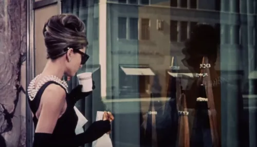
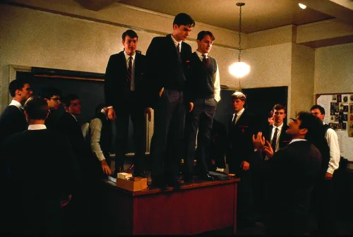
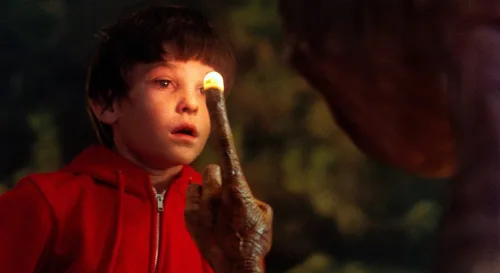
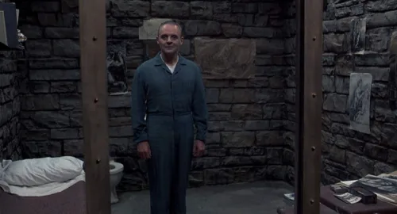
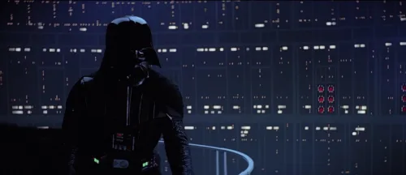

VINTAGEFLIX BLOCKBUSTER
VINTAGEFLIX BLOCKBUSTER
|  |  |  |  |  |
Aqui você encontrará uma coleção dos momentos mais emblemáticos que capturam a essência de alguns dos filmes mais icônicos da história do cinema. Explore a magia dos filmes através da nossa galeria de imagens!
Clique no nome do filme desejado para ver a nossa seleção de screenshots.